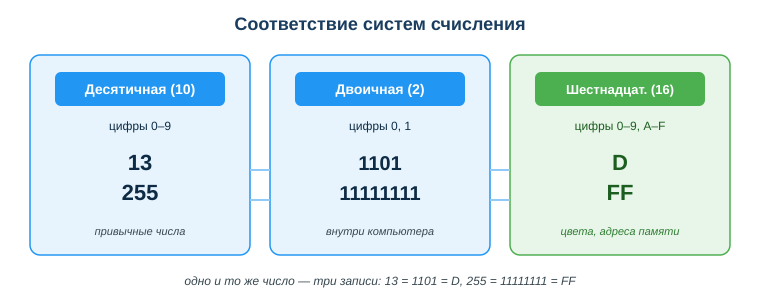
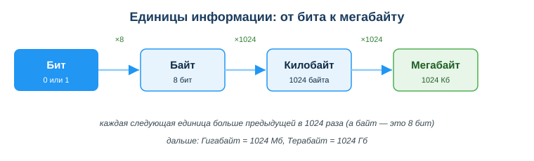

Дисциплина: Применение информационно-коммуникационных и цифровых технологий
Результат обучения: РО 2.1 — владение основами ИКТ · Объём темы: 2 часа
Квалификация: 4S06130103 «Разработчик программного обеспечения»
Представь три ситуации, с которыми ты столкнёшься в первые же месяцы работы. Первая: коллега прислал CSV-файл с данными, ты открываешь его в программе — а вместо «Привет, Алия» видишь Привет, Алия. Текст превратился в нечитаемую кашу, хотя файл «правильный». Вторая: верстаешь страницу, дизайнер дал цвет кнопки #1A3C5E, а ты не понимаешь, что это за число и почему именно шесть символов. Третья: пишешь проверку суммы заказа, считаешь 0.1 + 0.2, ждёшь 0.3, а программа печатает 0.30000000000000004 — и условие if (итог == 0.3) не срабатывает, хотя «всё правильно».
Три разные загадки — но причина у них одна. Все три вырастают из того, как компьютер кодирует информацию. Внутри машины нет ни русских букв, ни цветов, ни «обычных» дробей — там есть только два состояния: есть напряжение или нет, 1 или 0. Всё остальное — текст, картинки, цвета, числа, звук, видео — это надстройка: договорённость о том, какая последовательность нулей и единиц что означает.
Эта тема — фундамент, на котором стоит вся остальная работа разработчика. Без неё баги выглядят «мистикой»: текст ломается «сам по себе», цвет получается не тот, числа считаются «неправильно». А с ней те же ситуации становятся предсказуемыми и чинятся за минуту. Именно умение мыслить «в системах счисления» и понимать кодирование отличает того, кто исправляет баг с кодировкой за пять минут, от того, кто ищет его полдня и в итоге пишет в чат «у меня всё сломалось». Ты постоянно будешь встречать HEX-цвета в вёрстке, кодировки при чтении файлов и ответов API, шестнадцатеричные адреса при отладке памяти. Эта тема — про то, чтобы перестать бояться всех этих «непонятных значков» и начать их читать [1; 4].
После изучения темы ты сможешь:
0.1 + 0.2 ≠ 0.3, и как правильно сравнивать дробные числа в коде.Начнём с главного вопроса: почему компьютер «думает» нулями и единицами, а не привычными нам десятью цифрами? Ответ — в физике. Процессор и память состоят из миллиардов крошечных переключателей (транзисторов). У переключателя надёжно различаются только два состояния: есть ток или нет, заряжена ячейка или нет, высокое напряжение или низкое. Условно это «1» и «0».
Можно ли было сделать десять состояний — десять уровней напряжения на одну ячейку? Теоретически да, но это резко ненадёжно: помехи, нагрев, износ — и уровни «4» и «5» начнут путаться, данные исказятся. А два состояния различить легко и надёжно почти при любых условиях. Поэтому вся цифровая техника построена на двух состояниях. Отсюда базовая единица информации — бит (от англ. binary digit, «двоичная цифра»): он хранит ровно один из двух вариантов, 0 или 1.
Один бит — это очень мало (всего два варианта: да/нет, вкл/выкл). Поэтому биты группируют. Группа из 8 бит называется байт. Почему именно 8? Восьми битов хватает, чтобы закодировать 256 разных значений (об этом ниже), — этого как раз достаточно, чтобы пронумеровать все буквы латиницы, цифры и знаки. Байт стал стандартной «ячейкой», которой оперируют процессор, память и файлы: один байт — минимальная порция, которую компьютер обычно адресует целиком.
Запомни главную мысль раздела: любая информация — число, буква, пиксель картинки, сэмпл звука — в итоге превращается в последовательность битов. Разница между текстовым файлом и картинкой не в том, что «внутри них», а в том, как договорились читать одни и те же нули и единицы. Договорённость о чтении — это и есть кодировка, к которой мы придём в разделе 4.6.
Система счисления — это способ записывать числа с помощью ограниченного набора цифр. Самая привычная для нас — десятичная: десять цифр (0–9), потому что у человека десять пальцев. Но это лишь одна из возможных систем, а не «единственно правильная».
Ключевое слово — позиционность. В позиционной системе значение цифры зависит от её места (позиции, разряда). Возьми число 253 в десятичной системе. Оно читается так:
253 = 2 × 100 + 5 × 10 + 3 × 1
= 2 × 10² + 5 × 10¹ + 3 × 10⁰Видишь закономерность? Каждый разряд «весит» в 10 раз больше соседа справа: единицы (10⁰ = 1), десятки (10¹ = 10), сотни (10² = 100). Число 10 здесь — основание системы. Основание показывает две вещи сразу: сколько разных цифр используется (в десятичной — десять, 0–9) и во сколько раз растёт «вес» каждого следующего разряда.
Теперь самое важное для понимания всей темы: основание можно взять любое. Если взять основание 2, получится двоичная система (цифры 0 и 1, веса разрядов — степени двойки). Если 16 — шестнадцатеричная (цифры 0–9 и A–F, веса — степени шестнадцати). При этом само число не меняется — меняется только его запись. Количество «тринадцать» — это 13 в десятичной, 1101 в двоичной и D в шестнадцатеричной. Это как одно слово на трёх языках: звучит по-разному, смысл один.
Посмотри на схему «Соответствие систем счисления» (приложение А). Три колонки — три системы. Обрати внимание на нижнюю подпись: 13 = 1101 = D и 255 = 11111111 = FF. Это и есть главная идея темы наглядно: одно число — три записи. Дальше мы научимся переводить между ними.

Сведём три системы в таблицу — к ней удобно возвращаться:
| Система | Основание | Цифры | Где встречается у разработчика |
|---|---|---|---|
| Двоичная | 2 | 0, 1 | внутреннее представление, маски, флаги |
| Десятичная | 10 | 0–9 | обычные числа в коде и интерфейсе |
| Шестнадцатеричная (HEX) | 16 | 0–9, A–F | цвета CSS, адреса памяти, байты, хеши |
Это центральный практический навык темы. Разберём оба направления подробно и с проверкой.
Направление 1: из десятичной в двоичную (метод деления на 2).
Алгоритм: делим число на 2, записываем остаток (он всегда 0 или 1), частное снова делим на 2 — и так, пока не дойдём до нуля. Затем выписываем остатки снизу вверх. Разберём на числе 13:
13 / 2 = 6 остаток 1 ← младший разряд (последний бит)
6 / 2 = 3 остаток 0
3 / 2 = 1 остаток 1
1 / 2 = 0 остаток 1 ← старший разряд (первый бит)Выписываем остатки снизу вверх: 1101. Значит, 13 в десятичной = 1101 в двоичной.
Почему снизу вверх? Потому что первый остаток, который мы получили (1), — это самый «лёгкий» разряд (единицы, 2⁰), а последний (1) — самый «тяжёлый». Запись числа всегда идёт от старшего разряда к младшему, поэтому переворачиваем.
Возьмём пример посложнее — число 25:
25 / 2 = 12 остаток 1
12 / 2 = 6 остаток 0
6 / 2 = 3 остаток 0
3 / 2 = 1 остаток 1
1 / 2 = 0 остаток 1Снизу вверх: 11001. Значит, 25 = 11001.
Направление 2: из двоичной в десятичную (сумма степеней двойки).
Здесь идея обратная. Каждый разряд двоичного числа «весит» степень двойки: справа налево 2⁰=1, 2¹=2, 2²=4, 2³=8, 2⁴=16 и так далее. Складываем те степени, где стоит 1.
Проверим наш результат 11001. Подпишем веса под каждым разрядом:
разряд: 1 1 0 0 1
вес: 16 8 4 2 1
берём: 16 + 8 + 0 + 0 + 1 = 25Получили 25 — совпало с исходным числом. Это и есть проверка обратным переводом: всегда переводи число туда и обратно — если получил исходное, значит, не ошибся. Возьми за правило делать так на контрольных и в реальной работе.
Ещё пример для двоичного → десятичного, число 1101:
разряд: 1 1 0 1
вес: 8 4 2 1
берём: 8 + 4 + 0 + 1 = 13Полезно один раз запомнить первые степени двойки наизусть — это сильно ускорит счёт: 1, 2, 4, 8, 16, 32, 64, 128, 256, 512, 1024. Заметь: 128 + 64 + 32 + 16 + 8 + 4 + 2 + 1 = 255 — это максимум, который помещается в один байт (8 бит). Поэтому байт хранит значения от 0 до 255, всего 256 вариантов (2⁸ = 256). Это число будет встречаться постоянно — в цветах, в кодах символов, в диапазонах.
Двоичная запись надёжна для компьютера, но неудобна для человека: число 11111111 легко спутать, посчитать, переписать с ошибкой. Нужна запись компактнее. Ей стала шестнадцатеричная система (HEX) с основанием 16.
В ней 16 цифр. Первые десять — привычные 0–9. А для значений «десять… пятнадцать» придумали буквы:
| HEX | A | B | C | D | E | F |
|---|---|---|---|---|---|---|
| десятичное | 10 | 11 | 12 | 13 | 14 | 15 |
Главная причина любить HEX — красивая связь с двоичной системой: один HEX-символ кодирует ровно 4 бита. Почему ровно 4? Потому что 4 бита дают 2⁴ = 16 комбинаций — ровно столько, сколько цифр в HEX. Значит, байт (8 бит) — это всегда ровно 2 HEX-символа. Это превращает длинные двоичные «простыни» в короткие и читаемые группы.
Таблица соответствия 4 бит — одному HEX-символу (её полезно держать перед глазами):
| Двоичное | HEX | Десятичное | Двоичное | HEX | Десятичное | |
|---|---|---|---|---|---|---|
| 0000 | 0 | 0 | 1000 | 8 | 8 | |
| 0001 | 1 | 1 | 1001 | 9 | 9 | |
| 0010 | 2 | 2 | 1010 | A | 10 | |
| 0011 | 3 | 3 | 1011 | B | 11 | |
| 0100 | 4 | 4 | 1100 | C | 12 | |
| 0101 | 5 | 5 | 1101 | D | 13 | |
| 0110 | 6 | 6 | 1110 | E | 14 | |
| 0111 | 7 | 7 | 1111 | F | 15 |
Перевод двоичное → HEX «по 4 бита». Возьми 11111111, раздели справа на группы по 4: 1111 | 1111. По таблице 1111 = F. Значит, 11111111 = FF. Вот почему 255 = FF: восемь единиц подряд — это два символа F.
Ещё пример: двоичное 11010010. Делим: 1101 | 0010 → D и 2 → HEX D2. Обратно D2 в десятичное считается так же, как в двоичной, но веса разрядов — степени 16: D × 16¹ + 2 × 16⁰ = 13 × 16 + 2 × 1 = 208 + 2 = 210.
Перевод десятичное → HEX (деление на 16). Алгоритм тот же, что для двоичной, только делим на 16. Возьмём число 255:
255 / 16 = 15 остаток 15 → 15 = F (младший разряд)
15 / 16 = 0 остаток 15 → 15 = F (старший разряд)Снизу вверх: FF. Возьмём 210:
210 / 16 = 13 остаток 2 → 2
13 / 16 = 0 остаток 13 → DСнизу вверх: D2. Совпало с примером выше — проверка сошлась.
Где ты встретишь HEX каждый день: цвета в CSS (#1A3C5E), адреса памяти при отладке (0x7ffee3b0), значения байтов в логах и дампах, хеши и контрольные суммы, escape-последовательности (A). Поэтому HEX — не экзотика, а рабочий язык разработчика.
Раз вся информация — это биты, нужно уметь измерять её количество. Посмотри на схему «Единицы информации» (приложение Б) и разберём шкалу по шагам.

Обрати внимание на «странное» число 1024, а не 1000. Откуда оно? 1024 = 2¹⁰ — это «круглое» число именно в двоичном мире. Компьютеру удобнее считать степенями двойки, поэтому исторически каждая следующая единица больше предыдущей в 1024 раза, а не в 1000 (как в привычной метрике «кило = тысяча»). Из-за этого, кстати, возникает житейская путаница: производитель диска пишет «1 ТБ», считая по 1000, а операционная система показывает меньше, считая по 1024 — диск не «обманул», просто единицы считаются по-разному.
Зачем это разработчику на практике? Чтобы прикидывать «вес» данных. Пара примеров для интуиции. Строка из 1000 латинских символов в UTF-8 займёт около 1 Кб (по байту на символ). Картинка-иконка 64×64 пикселя без сжатия, где каждый пиксель — 3 байта (R, G, B), весит 64 × 64 × 3 ≈ 12 Кб. Понимая такие оценки, ты не удивишься, почему загрузка «маленькой» картинки в высоком разрешении тормозит, и сможешь прикинуть лимиты для базы или API.
Мы выяснили, что компьютер хранит только числа. Тогда как он хранит буквы? Ответ: каждому символу заранее сопоставлен числовой код по специальной таблице — кодировке. Программа хранит код, а на экране показывает соответствующий символ.
Шаг 1. ASCII — первая таблица. В ранней таблице ASCII каждому символу латиницы, цифре и знаку препинания дали код от 0 до 127 (помещается в 7 бит). Например, латинская A = 65, B = 66, цифра 0 = 48, пробел = 32. Этого хватало для английского, но не для русского, казахского, китайского и сотен других письменностей.
Шаг 2. «Зоопарк» однобайтовых кодировок и корень проблемы «кракозябр». Чтобы добавить кириллицу, придумали кодировки вроде Windows-1251 и KOI8-R, где байты 128–255 заняли русскими буквами. Но таких национальных таблиц развелось много, и одни и те же байты в них означали разные буквы. Вот здесь и рождаются «кракозябры»: если файл записан в одной таблице, а прочитан в другой, программа берёт правильные байты, но истолковывает их по чужой таблице — и выводит не те символы.
Шаг 3. Unicode — единый стандарт. Чтобы покончить с «зоопарком», создали Unicode — одну гигантскую таблицу, где каждому символу всех языков мира (латиница, кириллица, казахские әөүғ, иероглифы, эмодзи) дан уникальный номер, называемый кодовой точкой. Например, русская «П» имеет кодовую точку U+041F. Unicode отвечает на вопрос «какой номер у символа», но не говорит, как этот номер записать в байты файла.
Шаг 4. UTF-8 — как записать Unicode в байты. UTF-8 — самый распространённый способ закодировать кодовые точки Unicode в байты. Его сильные стороны: латиница занимает 1 байт (совместимо со старым ASCII), а символы вроде кириллицы — 2 байта, более редкие — 3–4 байта. UTF-8 стал стандартом де-факто для веба, файлов и API. Сегодня правильный ответ почти всегда один: используй UTF-8 везде.
Разбор мини-кейса с «кракозябрами». Скрипт прочитал русский CSV и выдал Привет вместо «Привет». Что произошло пошагово: файл был сохранён в UTF-8, где «П» записана двумя байтами. Но программа прочитала эти байты как Windows-1251, где каждый байт — отдельный символ. В результате два байта буквы «П» превратились в два «символа» Рџ, и так со всем текстом. Байты не испортились — их просто прочли по неправильной таблице. Решение: явно указывать кодировку при чтении, например в Python open(file, encoding="utf-8"). Главный вывод: «текст» в файле — это байты плюс кодировка; без знания кодировки байты ничего не значат.
Теперь применим HEX к практической задаче, с которой ты столкнёшься в первой же вёрстке, — к цвету. На экране каждый цвет складывается из трёх составляющих света: Red (красный), Green (зелёный), Blue (синий). Это модель RGB. Яркость каждого канала задаётся числом от 0 (канал выключен) до 255 (канал на максимуме) — снова знакомый диапазон в один байт.
Запись #RRGGBB — это просто три байта подряд в HEX: первые два символа — красный, следующие два — зелёный, последние два — синий. Разберём по компонентам:
#FF0000 → R=FF (255, красный на максимуме), G=00, B=00 → чистый красный.#00FF00 → R=00, G=FF (255), B=00 → чистый зелёный.#0000FF → R=00, G=00, B=FF (255) → чистый синий.#FFFFFF → все три по 255 → весь свет вместе → белый.#000000 → все три по 0 → света нет → чёрный.Разберём «непрозрачный» пример — цвет из шапки этого документа #1A3C5E. Считаем каналы: R=1A = 1×16 + 10 = 26; G=3C = 3×16 + 12 = 60; B=5E = 5×16 + 14 = 94. Синего (94) заметно больше, чем красного (26), — поэтому цвет тёмно-синий. Теперь ты можешь не просто копировать цвет из макета, а читать его: какой канал сильнее — такой и оттенок.
0.1 + 0.2 ≠ 0.3: дроби в двоичном миреВернёмся к третьей загадке из введения. Программа печатает 0.1 + 0.2 = 0.30000000000000004. Это не баг твоего кода и не ошибка процессора — это прямое следствие двоичного хранения.
Вот в чём суть. Компьютер хранит дроби в двоичном виде (степени одной второй: 1/2, 1/4, 1/8…). Некоторые «круглые» для нас десятичные дроби в двоичной системе оказываются бесконечными — как 1/3 = 0,333… в десятичной. Десятичная дробь 0,1 в двоичном виде бесконечна, поэтому компьютер хранит лишь её приближение с ограниченным числом разрядов. Складывая два приближения (0,1 и 0,2), получаем результат, чуть-чуть отличающийся от точного 0,3 — отсюда «хвост» ...04.
Практический вывод важнее самой причины: никогда не сравнивай дробные числа на точное равенство (==). Вместо этого сравнивай с допуском (малой погрешностью): считай числа равными, если разница между ними меньше очень маленького порога, например |a - b| < 0.000001. А для денег, где точность критична, используют либо целые числа (храни сумму в тиынах/копейках, а не в тенге с дробью), либо специальные «десятичные» типы данных. Запомни это правило сейчас — оно сэкономит тебе часы отладки финансовых расчётов.
Пример 1 — перевод 25 туда и обратно (с проверкой).
Переводим 25 в двоичную делением на 2: остатки снизу вверх дают 11001 (см. 4.3). Проверяем обратным переводом: разряды 1 1 0 0 1, веса 16 8 4 2 1, берём 16 + 8 + 1 = 25. Совпало — значит, перевод верный. Этот приём «туда-обратно» — твой главный способ не ошибиться.
Пример 2 — разбор цвета #00FF00.
Делим по два символа: R=00, G=FF, B=00. R=00 — красного нет; G=FF=255 — зелёный на максимуме; B=00 — синего нет. Горит только зелёный канал на полную → это чистый зелёный цвет. Так же читается любой #RRGGBB: сначала разбей на три пары, потом оцени, какой канал ярче.
Пример 3 — починка «кракозябр».
Получил от API строку КазахСтан вместо «Казахстан». Диагностика по разделу 4.6: ответ пришёл в UTF-8, а твой код прочитал его в Windows-1251 — классическое несоответствие кодировок. Лечение: укажи чтение в UTF-8 (encoding="utf-8" / правильный заголовок Content-Type: charset=utf-8). Профилактика: держи UTF-8 везде — в редакторе, в файлах, в базе, в заголовках ответов.
Пример 4 — баг с дробями в проверке оплаты.
Код проверяет if (оплачено == 0.3), где оплачено = 0.1 + 0.2, и условие не срабатывает, хотя сумма «правильная». Причина — приближённое хранение дробей (4.8). Правильно: сравнивать с допуском (abs(оплачено - 0.3) < 0.000001) или, ещё лучше для денег, хранить суммы в целых тиынах.
10 (единица в следующем разряде). Как правильно: держи перед глазами таблицу A=10 … F=15 из раздела 4.4.==. Почему: дроби хранятся приближённо, точного равенства может не быть. Как правильно: сравнивай с допуском или храни деньги в целых единицах.Перевод числа между системами — пошагово:
Работа с цветом: разбей #RRGGBB на три пары → переведи каждую в десятичное (0–255) → оцени, какой канал ярче.
Работа с текстом: UTF-8 везде; при чтении/записи файлов и API указывай кодировку явно.
Работа с дробями: не сравнивай через ==; используй допуск; деньги храни в целых единицах.
13 = 1101 = D, меняется запись, не количество.#RRGGBB — это три байта R-G-B со значениями 0–255 каждый.0.1 + 0.2 ≠ 0.3 из-за приближённого двоичного хранения дробей; сравнивай с допуском.101101 в десятичную систему через сумму степеней двойки.FF в десятичной?#0000FF по компонентам R-G-B и назови его.== и как сравнивать правильно?Основная литература:
Дополнительно:
Нормативные источники РК:
Электронные ресурсы и документация:
Международные рамки:
assets/04_shema-sistemy-schisleniya.svg. Три колонки (десятичная, двоичная, шестнадцатеричная) показывают одно и то же число в трёх записях: 13 = 1101 = D и 255 = 11111111 = FF. Читай слева направо: меняется только форма записи, не само число.assets/04_shema-edinicy-informacii.svg. Цепочка бит → байт (×8) → килобайт (×1024) → мегабайт (×1024). Стрелки с подписями ×8 и ×1024 показывают, во сколько раз растёт каждая следующая единица.Памятка-чек-лист «Перевод чисел» (держи под рукой):
Материал подготовлен на основе урока темы (urok.md) и приведённых в конце источников; он расширяет и углубляет содержание урока для самостоятельного изучения. Источники приведены главами и ссылками (без номеров страниц); нормативные акты — с реквизитами.
Материал разработан рабочей группой ТОО «Колледж Хекслет Казахстан» и одобрен к использованию в обучении решением Педагогического совета.